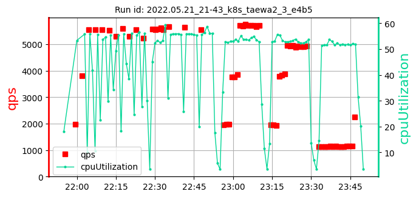
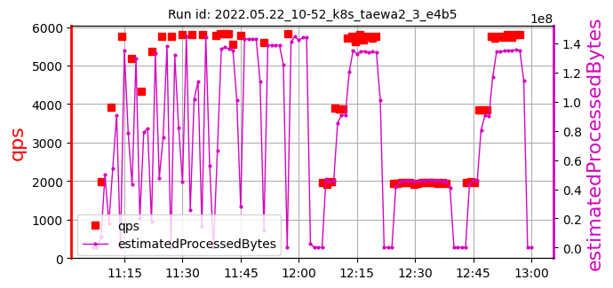

Please zoom out to see the full table.
k8s_taewa2_3_ samples: 13
date generated: 2022-06-26 20:58:05.653625
| | Overall: |
max:
467
min:
251
mean:
363
|
max:
5818
min:
4113
mean:
5218
|
max:
57.79
min:
54.69
mean:
56.36
|
max:
376
min:
14
mean:
167
|
| 1. test id: 2022.05.20_01-15_k8s_taewa2_3_e4b5 [raw data] | run settings: cpu=70 pods=3 treads=25 sc_min=14 warmup=90 | |
Duration s | qps | CPU % | Err |
 | | | [384, 296, 368]
349 | [5643, 5616, 5624]
5627 | [57.18, 57.1, 56.32]
56.86 | 100 |
| 2. test id: 2022.05.20_05-19_k8s_taewa2_3_e4b5 [raw data] | run settings: cpu=70 pods=3 treads=25 sc_min=14 warmup=90 | |
Duration s | qps | CPU % | Err |
| | | [377, 386, 402]
388 | [4769, 4819, 4823]
4804 | [56.61, 54.69, 57.15]
56.15 | 235 |
| 3. test id: 2022.05.20_10-25_k8s_taewa2_3_e4b5 [raw data] | run settings: cpu=70 pods=3 treads=25 sc_min=14 warmup=90 | |
Duration s | qps | CPU % | Err |
|  | | [397, 373, 322]
364 | [4932, 4907, 4985]
4941 | [56.57, 56.53, 55.7]
56.27 | 146 |
| 4. test id: 2022.05.20_19-25_k8s_taewa2_3_e4b5 [raw data] | run settings: cpu=70 pods=3 treads=25 sc_min=14 warmup=90 | |
Duration s | qps | CPU % | Err |
| | | [251, 389, 351]
330 | [4145, 4113, 4139]
4132 | [55.27, 56.09, 55.84]
55.74 | 254 |
| 5. test id: 2022.05.20_21-39_k8s_taewa2_3_e4b5 [raw data] | run settings: cpu=70 pods=3 treads=25 sc_min=14 warmup=90 | |
Duration s | qps | CPU % | Err |
|  | | [407, 371, 322]
367 | [5742, 5760, 5427]
5643 | [56.55, 56.35, 56.96]
56.62 | 120 |
| 6. test id: 2022.05.21_00-00_k8s_taewa2_3_e4b5 [raw data] | run settings: cpu=70 pods=3 treads=25 sc_min=14 warmup=90 | |
Duration s | qps | CPU % | Err |
| | | [388, 409, 423]
407 | [4805, 4773, 4700]
4759 | [56.56, 55.06, 55.94]
55.86 | 125 |
| 7. test id: 2022.05.21_05-02_k8s_taewa2_3_e4b5 [raw data] | run settings: cpu=70 pods=3 treads=25 sc_min=14 warmup=90 | |
Duration s | qps | CPU % | Err |
| | | [328, 292, 335]
319 | [4876, 4941, 4804]
4874 | [55.7, 55.55, 55.8]
55.68 | 14 |
| 8. test id: 2022.05.21_10-14_k8s_taewa2_3_e4b5 [raw data] | run settings: cpu=70 pods=3 treads=25 sc_min=14 warmup=90 | |
Duration s | qps | CPU % | Err |
| | | [344, 338, 358]
347 | [5502, 5775, 5799]
5692 | [56.86, 55.73, 56.18]
56.26 | 221 |
| 9. test id: 2022.05.21_21-43_k8s_taewa2_3_e4b5 [raw data] | run settings: cpu=70 pods=3 treads=25 sc_min=14 warmup=90 | |
Duration s | qps | CPU % | Err |
|  | | [359, 374]
366 | [5668, 5629, 5554]
5617 | [55.9, 55.76, 57.1]
56.25 | 76 |
| 10. test id: 2022.05.22_00-43_k8s_taewa2_3_e4b5 [raw data] | run settings: cpu=70 pods=3 treads=25 sc_min=14 warmup=90 | |
Duration s | qps | CPU % | Err |
| |  | [412, 345, 363]
373 | [4773, 4792, 4828]
4798 | [56.4, 56.67, 56.6]
56.56 | 39 |
| 11. test id: 2022.05.22_03-01_k8s_taewa2_3_e4b5 [raw data] | run settings: cpu=70 pods=3 treads=25 sc_min=14 warmup=90 | |
Duration s | qps | CPU % | Err |
| | | [385, 344, 381]
370 | [5607, 5587, 5535]
5576 | [57.13, 57.25, 57.79]
57.39 | 376 |
| 12. test id: 2022.05.22_08-22_k8s_taewa2_3_e4b5 [raw data] | run settings: cpu=70 pods=3 treads=25 sc_min=14 warmup=90 | |
Duration s | qps | CPU % | Err |
| | | [320, 331, 467]
373 | [5662, 5643, 5629]
5645 | [57.01, 56.07, 56.21]
56.43 | 338 |
| 13. test id: 2022.05.22_10-52_k8s_taewa2_3_e4b5 [raw data] | run settings: cpu=70 pods=3 treads=25 sc_min=14 warmup=90 | |
Duration s | qps | CPU % | Err |
|  | | | [353, 392]
372 | [5775, 5600, 5818]
5731 | [56.76, 56.63, 56.49]
56.63 | 121 |
k8s_taewa2_3_ samples: 13
date generated: 2022-06-26 20:58:05.653625
| | Overall: |
max:
467
min:
251
mean:
363
|
max:
5818
min:
4113
mean:
5218
|
max:
57.79
min:
54.69
mean:
56.36
|
max:
376
min:
14
mean:
167
|